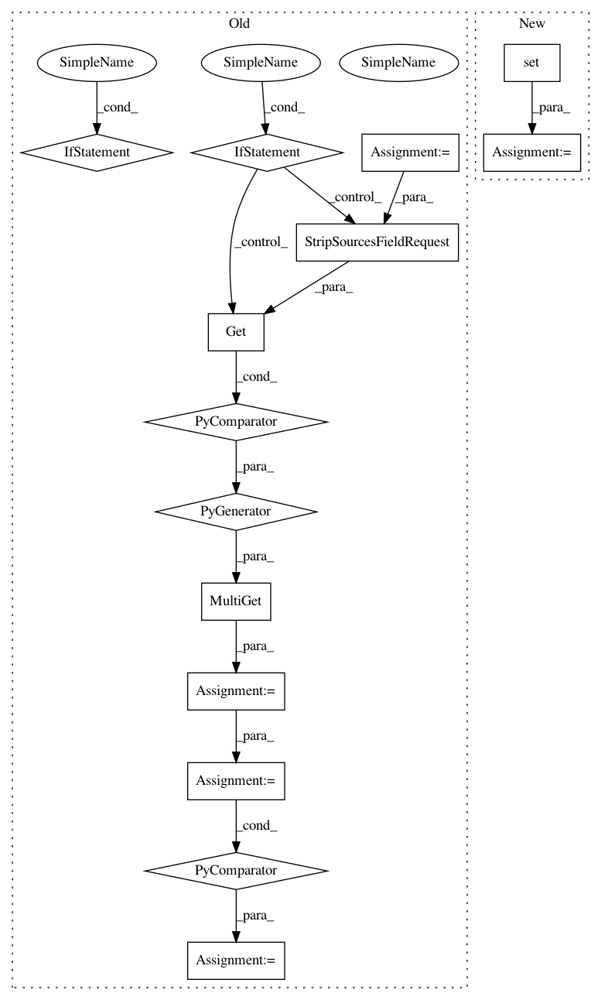

41ec94b758aac39c13f59e694fba5ed096a51ba9,src/python/pants/backend/python/rules/run_setup_py.py,,get_sources,#Any#,466
Before Change
@rule
async def get_sources(request: SetupPySourcesRequest) -> SetupPySources:
targets = request.targets
stripped_srcs_list = await MultiGet(
Get(
SourceRootStrippedSources,
StripSourcesFieldRequest(
target.get(Sources),
for_sources_types=(PythonSources, ResourcesSources),
enable_codegen=True,
),
)
for target in targets
)
// Create a chroot with all the sources, and any ancestor __init__.py files that might be needed
// for imports to work. Note that if a repo has multiple exported targets under a single ancestor
// package, then that package must be a namespace package, which in Python 3 means it must not
// have an __init__.py. We don"t validate this here, because it would require inspecting *all*
// targets, whether or not they are in the target set for this run - basically the entire repo.
// So it"s the repo owners" responsibility to ensure __init__.py hygiene.
stripped_srcs_digests = [
stripped_sources.snapshot.digest for stripped_sources in stripped_srcs_list
]
ancestor_init_pys = await Get(AncestorInitPyFiles, Targets, targets)
sources_digest = await Get(
Digest, MergeDigests((*stripped_srcs_digests, *ancestor_init_pys.digests))
)
After Change
),
)
python_files = set(python_sources.snapshot.files)
all_files = set(all_sources.snapshot.files)
resource_files = all_files - python_files
init_py_digest_contents = await Get(
DigestContents, DigestSubset(python_sources.snapshot.digest, PathGlobs(["**/__init__.py"]))
)
In pattern: SUPERPATTERN
Frequency: 3
Non-data size: 14
Instances
Project Name: pantsbuild/pants
Commit Name: 41ec94b758aac39c13f59e694fba5ed096a51ba9
Time: 2020-08-01
Author: benjyw@gmail.com
File Name: src/python/pants/backend/python/rules/run_setup_py.py
Class Name:
Method Name: get_sources
Project Name: pantsbuild/pants
Commit Name: 41ec94b758aac39c13f59e694fba5ed096a51ba9
Time: 2020-08-01
Author: benjyw@gmail.com
File Name: src/python/pants/backend/python/rules/run_setup_py.py
Class Name:
Method Name: get_sources
Project Name: pantsbuild/pants
Commit Name: 52c7c260e7c0a85e6b051af48b46e8fe9493b117
Time: 2020-08-04
Author: benjyw@gmail.com
File Name: src/python/pants/core/util_rules/determine_source_files.py
Class Name:
Method Name: determine_all_source_files
Project Name: pantsbuild/pants
Commit Name: 52c7c260e7c0a85e6b051af48b46e8fe9493b117
Time: 2020-08-04
Author: benjyw@gmail.com
File Name: src/python/pants/core/util_rules/determine_source_files.py
Class Name:
Method Name: determine_specified_source_files